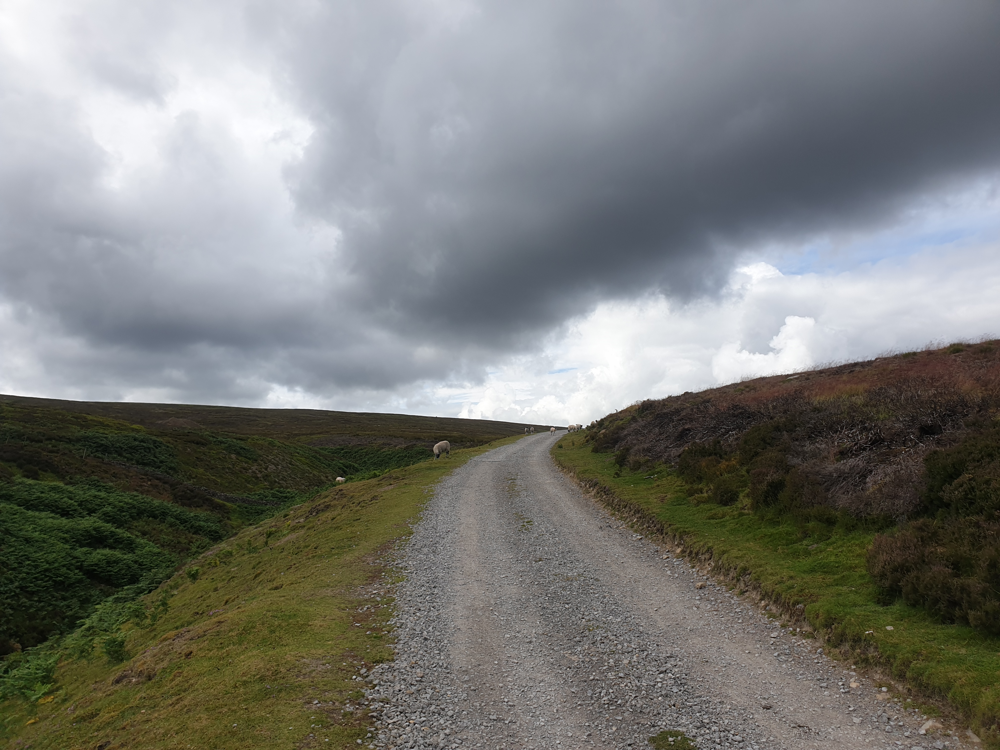

This tour was mainly a roadtrip through the dales with a little stop off for a wander and a picnic. This is where we parked.

Leaving Tiggy at the car park we crossed the bridge to the other side of the Old Gang Beck. Looking back towards Tiggy in the distance.

Following the gravel track West, alongside the beck, there are lots of views.


Along the way there are various ruins of the old Iron stone smelting mills that used to operate here.


Ruby enjoying an adventure amongst the ruins.

The reason why Ruby was on a lead, lots of tunnels all over the place.

Ruby giving us a smile cos it's picnic time!!!

I will be doing a full loop of the area at some point in 2025. For now we walked further along the track until the clouds looked a little dark so we turned back.

The view of the track on the way back to Tiggy.